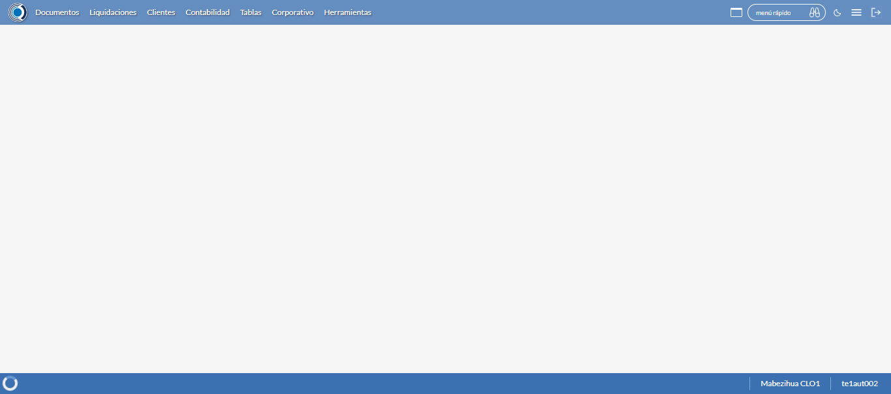
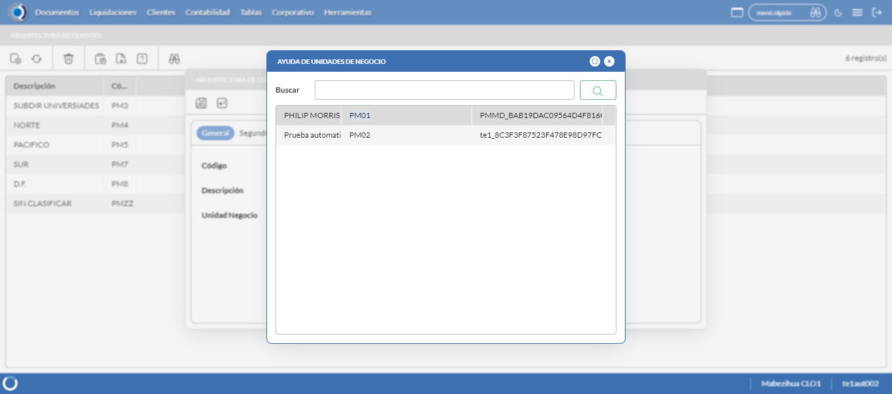
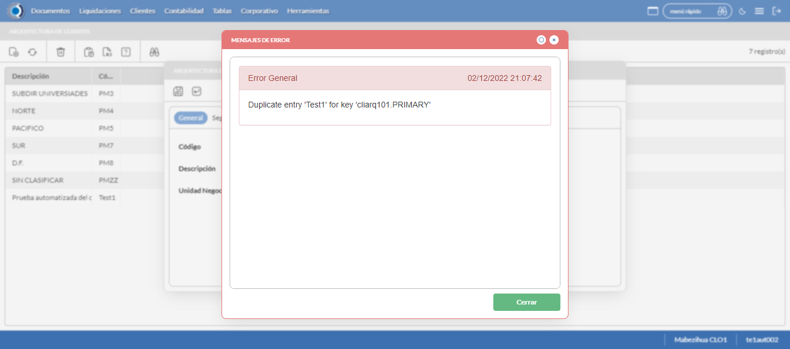
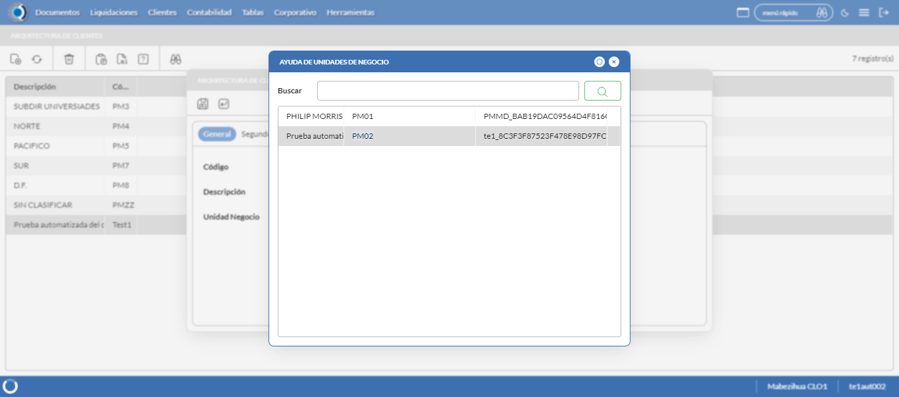
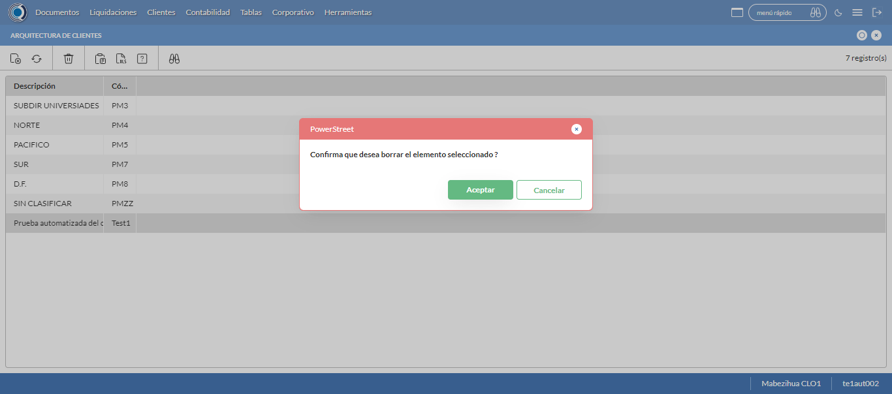

Desarrollado por : Area de Testing PWST
Fecha y hora de inicio : 2022-12-02 15:06:56
Duracion : 0:01:26.984551
Resultado : Total 8，Correctos 7 ，Errores 1 ，Taza de resultado 87.50%
Resumen 87.50% Errores 1 Fallidos 0 Correctos 7 Test realizados 8
| Caso de Prueba | Total | Correctos | Fallido | Error | Detalles | Captura del error |
| ArqCliente.Test: Escenario 1 de Arquitectura Cliente | 8 | 7 | 0 | 1 | Detalles | |
test |
ft1_1: 2022-12-02 15:06:57,539 - root - INFO - Se abre el chrome
2022-12-02 15:06:58,638 - root - INFO - Entra a la URL
2022-12-02 15:06:58,791 - root - INFO - Maximiza la pantalla
Traceback (most recent call last):
File "C:\Users\gerar\AppData\Local\Programs\Python\Python311\Lib\site-packages\selenium\webdriver\remote\switch_to.py", line 88, in frame
frame_reference = self._driver.find_element(By.ID, frame_reference)
^^^^^^^^^^^^^^^^^^^^^^^^^^^^^^^^^^^^^^^^^^^^^^^^^
File "C:\Users\gerar\AppData\Local\Programs\Python\Python311\Lib\site-packages\selenium\webdriver\remote\webdriver.py", line 861, in find_element
return self.execute(Command.FIND_ELEMENT, {"using": by, "value": value})["value"]
^^^^^^^^^^^^^^^^^^^^^^^^^^^^^^^^^^^^^^^^^^^^^^^^^^^^^^^^^^^^^^^^^
File "C:\Users\gerar\AppData\Local\Programs\Python\Python311\Lib\site-packages\selenium\webdriver\remote\webdriver.py", line 444, in execute
self.error_handler.check_response(response)
File "C:\Users\gerar\AppData\Local\Programs\Python\Python311\Lib\site-packages\selenium\webdriver\remote\errorhandler.py", line 249, in check_response
raise exception_class(message, screen, stacktrace)
selenium.common.exceptions.NoSuchElementException: Message: no such element: Unable to locate element: {"method":"css selector","selector":"[id="mainFrame"]"}
(Session info: chrome=108.0.5359.72)
Stacktrace:
Backtrace:
(No symbol) [0x00FEF243]
(No symbol) [0x00F77FD1]
(No symbol) [0x00E6D04D]
(No symbol) [0x00E9C0B0]
(No symbol) [0x00E9C22B]
(No symbol) [0x00ECE612]
(No symbol) [0x00EB85D4]
(No symbol) [0x00ECC9EB]
(No symbol) [0x00EB8386]
(No symbol) [0x00E9163C]
(No symbol) [0x00E9269D]
GetHandleVerifier [0x01289A22+2655074]
GetHandleVerifier [0x0127CA24+2601828]
GetHandleVerifier [0x01098C0A+619850]
GetHandleVerifier [0x01097830+614768]
(No symbol) [0x00F805FC]
(No symbol) [0x00F85968]
(No symbol) [0x00F85A55]
(No symbol) [0x00F9051B]
BaseThreadInitThunk [0x76866739+25]
RtlGetFullPathName_UEx [0x77D98AFF+1215]
RtlGetFullPathName_UEx [0x77D98ACD+1165]
During handling of the above exception, another exception occurred:
Traceback (most recent call last):
File "C:\Users\gerar\AppData\Local\Programs\Python\Python311\Lib\site-packages\selenium\webdriver\remote\switch_to.py", line 91, in frame
frame_reference = self._driver.find_element(By.NAME, frame_reference)
^^^^^^^^^^^^^^^^^^^^^^^^^^^^^^^^^^^^^^^^^^^^^^^^^^^
File "C:\Users\gerar\AppData\Local\Programs\Python\Python311\Lib\site-packages\selenium\webdriver\remote\webdriver.py", line 861, in find_element
return self.execute(Command.FIND_ELEMENT, {"using": by, "value": value})["value"]
^^^^^^^^^^^^^^^^^^^^^^^^^^^^^^^^^^^^^^^^^^^^^^^^^^^^^^^^^^^^^^^^^
File "C:\Users\gerar\AppData\Local\Programs\Python\Python311\Lib\site-packages\selenium\webdriver\remote\webdriver.py", line 444, in execute
self.error_handler.check_response(response)
File "C:\Users\gerar\AppData\Local\Programs\Python\Python311\Lib\site-packages\selenium\webdriver\remote\errorhandler.py", line 249, in check_response
raise exception_class(message, screen, stacktrace)
selenium.common.exceptions.NoSuchElementException: Message: no such element: Unable to locate element: {"method":"css selector","selector":"[name="mainFrame"]"}
(Session info: chrome=108.0.5359.72)
Stacktrace:
Backtrace:
(No symbol) [0x00FEF243]
(No symbol) [0x00F77FD1]
(No symbol) [0x00E6D04D]
(No symbol) [0x00E9C0B0]
(No symbol) [0x00E9C22B]
(No symbol) [0x00ECE612]
(No symbol) [0x00EB85D4]
(No symbol) [0x00ECC9EB]
(No symbol) [0x00EB8386]
(No symbol) [0x00E9163C]
(No symbol) [0x00E9269D]
GetHandleVerifier [0x01289A22+2655074]
GetHandleVerifier [0x0127CA24+2601828]
GetHandleVerifier [0x01098C0A+619850]
GetHandleVerifier [0x01097830+614768]
(No symbol) [0x00F805FC]
(No symbol) [0x00F85968]
(No symbol) [0x00F85A55]
(No symbol) [0x00F9051B]
BaseThreadInitThunk [0x76866739+25]
RtlGetFullPathName_UEx [0x77D98AFF+1215]
RtlGetFullPathName_UEx [0x77D98ACD+1165]
During handling of the above exception, another exception occurred:
Traceback (most recent call last):
File "C:\xampp\htdocs\versiones\automatizaciones\AutoPWST\01ARC\testCase\ArqCliente.py", line 31, in test
self.driver.switch_to.frame("mainFrame")
File "C:\Users\gerar\AppData\Local\Programs\Python\Python311\Lib\site-packages\selenium\webdriver\remote\switch_to.py", line 93, in frame
raise NoSuchFrameException(frame_reference)
selenium.common.exceptions.NoSuchFrameException: Message: mainFrame
|
|
||||
test_000: Ingresa a la base de datos |
pt1_2: 2022-12-02 15:07:01,864 - root - INFO - Escribe el usuario
2022-12-02 15:07:01,923 - root - INFO - Escribe la contraseña
2022-12-02 15:07:01,975 - root - INFO - Se dio clic en el boton ingresar
2022-12-02 15:07:03,206 - root - INFO - Ejecutar Enterprise
2022-12-02 15:07:07,246 - root - INFO - Cambia entre pestañas
|
|
||||
test_001: Abre menu y ejecuta pantalla |
pt1_3: 2022-12-02 15:07:12,849 - root - INFO - Abre la pantalla de Arquitectura de CLiente
2022-12-02 15:07:12,850 - root - INFO - Captura: C:\xampp\htdocs\versiones\automatizaciones\AutoPWST\01ARC\report\img screen：20221202_15_07_12.png
2022-12-02 15:07:13,510 - root - INFO - La pantalla ejecutada es Tipos de Cliente
2022-12-02 15:07:14,096 - root - INFO - Se da clic en el registro creado, para proceder a modificarlo.
2022-12-02 15:07:14,676 - root - INFO - Se hace el cambio de pestaña para continuar con el registro nuevo
2022-12-02 15:07:15,786 - root - INFO - Se da clic en el registro de segundo nivel creado, para proceder a eliminarlo.
2022-12-02 15:07:16,371 - root - INFO - Se hace el cambio de pestaña para continuar con el registro nuevo
2022-12-02 15:07:17,489 - root - INFO - Se da clic en el registro de tercer nivel creado, para proceder a eliminarlo.
2022-12-02 15:07:18,075 - root - INFO - Se hace el cambio de pestaña para continuar con el registro nuevo
2022-12-02 15:07:19,196 - root - INFO - Se da clic en el registro de cuarto nivel creado, para proceder a eliminarlo.
2022-12-02 15:07:19,256 - root - INFO - Se presiona el boton 'Eliminar' de cuarto nivel, para eliminar el registro.
2022-12-02 15:07:19,464 - root - INFO - Se da clic en el boton Guardar de tercer nivel; se debe crear un nuevo registro.
2022-12-02 15:07:19,805 - root - INFO - Se da clic en el boton Guardar de segundo nivel; se debe crear un nuevo registro.
2022-12-02 15:07:20,115 - root - INFO - Se da clic en el boton Guardar; se debe crear un nuevo registro.
2022-12-02 15:07:20,700 - root - INFO - Se da clic en el registro creado, para proceder a eliminarlo.
2022-12-02 15:07:21,272 - root - INFO - Se hace el cambio de pestaña para continuar con el registro nuevo
2022-12-02 15:07:22,373 - root - INFO - Se da clic en el registro de segundo nivel creado, para proceder a eliminarlo.
2022-12-02 15:07:22,939 - root - INFO - Se hace el cambio de pestaña para continuar con el registro nuevo
2022-12-02 15:07:24,037 - root - INFO - Se da clic en el registro de tercer nivel creado, para proceder a eliminarlo.
2022-12-02 15:07:24,101 - root - INFO - Se presiona el boton 'Eliminar' de tercer nivel, para eliminar el registro.
2022-12-02 15:07:24,265 - root - INFO - Se da clic en el boton Guardar de segundo nivel; se debe crear un nuevo registro.
2022-12-02 15:07:24,547 - root - INFO - Se da clic en el boton Guardar; se debe crear un nuevo registro.
2022-12-02 15:07:25,138 - root - INFO - Se da clic en el registro creado, para proceder a eliminarlo.
2022-12-02 15:07:25,719 - root - INFO - Se hace el cambio de pestaña para continuar con el registro nuevo
2022-12-02 15:07:26,805 - root - INFO - Se da clic en el registro de segundo nivel creado, para proceder a eliminarlo.
2022-12-02 15:07:26,860 - root - INFO - Se presiona el boton 'Eliminar' de segundo nivel, para eliminar el registro.
2022-12-02 15:07:27,042 - root - INFO - Se da clic en el boton Guardar; se debe crear un nuevo registro.
2022-12-02 15:07:27,621 - root - INFO - Se da clic en el registro creado, para proceder a eliminarlo.
2022-12-02 15:07:27,680 - root - INFO - Se presiona el boton 'Eliminar', para eliminar el registro.
2022-12-02 15:07:28,256 - root - INFO - Se confirma el eliminado del registro
2022-12-02 15:07:28,503 - root - INFO - Se presiona el boton 'Refrescar', para crear un nuevo registro igual al anterior.
2022-12-02 15:07:30,568 - root - INFO - Se presiona el boton 'Nuevo', para crear un nuevo registro.
|
 | ||||
test_002: Abre la ventana de nuevo y crear un registro |
pt1_4: 2022-12-02 15:07:31,113 - root - INFO - Se abrio la pantalla para el ingreso de un registro nuevo.
2022-12-02 15:07:31,165 - root - INFO - Ingresa el codigo del nuevo registro
2022-12-02 15:07:31,230 - root - INFO - Ingresa el codigo alternativo del nuevo registro
2022-12-02 15:07:31,347 - root - INFO - Ingresa la descripción del nuevo registro
2022-12-02 15:07:32,219 - root - INFO - Captura: C:\xampp\htdocs\versiones\automatizaciones\AutoPWST\01ARC\report\img screen：20221202_15_07_32.png
2022-12-02 15:07:32,525 - root - INFO - Se hace el cambio de pestaña para continuar con el registro nuevo
2022-12-02 15:07:33,118 - root - INFO - Se presiona el boton de segundo nivel 'Nuevo', para crear un nuevo registro.
2022-12-02 15:07:33,687 - root - INFO - Ingresa el codigo del nuevo registro en segundo nivel
2022-12-02 15:07:33,769 - root - INFO - Ingresa el codigo alternativo del nuevo registro en segundo nivel
2022-12-02 15:07:33,901 - root - INFO - Ingresa la descripción del nuevo registro del segundo nivel
2022-12-02 15:07:33,939 - root - INFO - Se hace el cambio de pestaña para continuar con el registro nuevo
2022-12-02 15:07:34,518 - root - INFO - Se presiona el boton 'Nuevo' de tercer nivel, para crear un nuevo registro.
2022-12-02 15:07:35,113 - root - INFO - Ingresa el codigo del nuevo registro en tercer nivel
2022-12-02 15:07:35,206 - root - INFO - Ingresa el codigo alternativo del nuevo registro en tercer nivel
2022-12-02 15:07:35,365 - root - INFO - Ingresa la descripción del nuevo registro del tercer nivel
2022-12-02 15:07:35,408 - root - INFO - Se hace el cambio de pestaña para continuar con el registro nuevo
2022-12-02 15:07:36,035 - root - INFO - Se presiona el boton 'Nuevo' de cuarto nivel, para crear un nuevo registro.
2022-12-02 15:07:36,621 - root - INFO - Ingresa el codigo del nuevo registro en cuarto nivel
2022-12-02 15:07:36,734 - root - INFO - Ingresa el codigo alternativo del nuevo registro en cuarto nivel
2022-12-02 15:07:36,856 - root - INFO - Ingresa la descripción del nuevo registro del cuarto nivel
2022-12-02 15:07:36,907 - root - INFO - Se da clic en el boton Guardar de cuarto nivel; se debe crear un nuevo registro.
2022-12-02 15:07:37,276 - root - INFO - Se da clic en el boton Guardar de tercer nivel; se debe crear un nuevo registro.
2022-12-02 15:07:37,558 - root - INFO - Se da clic en el boton Guardar de segundo nivel; se debe crear un nuevo registro.
2022-12-02 15:07:37,842 - root - INFO - Se da clic en el boton Guardar; se debe crear un nuevo registro.
|
 | ||||
test_003: Repetir el registro creado anteriormente |
pt1_5: 2022-12-02 15:07:38,158 - root - INFO - Se presiona el boton 'Refrescar', para crear un nuevo registro igual al anterior.
2022-12-02 15:07:40,216 - root - INFO - Se presiona el boton 'Nuevo', para crear un nuevo registro igual al anterior.
2022-12-02 15:07:40,762 - root - INFO - Se abrio la pantalla para el ingreso de un registro nuevo.
2022-12-02 15:07:40,820 - root - INFO - Ingresa el codigo del nuevo registro
2022-12-02 15:07:40,882 - root - INFO - Ingresa el codigo alternativo del nuevo registro
2022-12-02 15:07:40,990 - root - INFO - Ingresa la descripción del nuevo registro
2022-12-02 15:07:42,139 - root - INFO - Se da clic en el boton Guardar; se debe crear un nuevo registro.
2022-12-02 15:07:44,140 - root - INFO - Captura: C:\xampp\htdocs\versiones\automatizaciones\AutoPWST\01ARC\report\img screen：20221202_15_07_44.png
2022-12-02 15:07:44,309 - root - INFO - Se presiona el boton 'Cerrar', para cerrar el mensaje de duplicidad de llave primaria
2022-12-02 15:07:44,451 - root - INFO - Se presiona el boton 'Cerrar', para cerrar la ventana
|
 | ||||
test_004: Modificar el registro |
pt1_6: 2022-12-02 15:07:44,637 - root - INFO - Se presiona el boton 'Refrescar', para crear un nuevo registro igual al anterior.
2022-12-02 15:07:47,228 - root - INFO - Se da clic en el registro creado, para proceder a modificarlo.
2022-12-02 15:07:47,834 - root - INFO - Ingresa el codigo alternativo del nuevo registro
2022-12-02 15:07:47,967 - root - INFO - Ingresa la descripción del nuevo registro
2022-12-02 15:07:48,837 - root - INFO - Se da doble click en el registro de Unidad Negocio.
2022-12-02 15:07:48,838 - root - INFO - Captura: C:\xampp\htdocs\versiones\automatizaciones\AutoPWST\01ARC\report\img screen：20221202_15_07_48.png
2022-12-02 15:07:49,142 - root - INFO - Se hace el cambio de pestaña para continuar con el registro nuevo
2022-12-02 15:07:50,241 - root - INFO - Se da clic en el registro de segundo nivel creado, para proceder a modificarlo.
2022-12-02 15:07:50,855 - root - INFO - Ingresa el codigo alternativo del registro modificado en segundo nivel
2022-12-02 15:07:51,080 - root - INFO - Ingresa la descripción del registro modificado del segundo nivel
2022-12-02 15:07:51,127 - root - INFO - Se hace el cambio de pestaña para continuar con el registro nuevo
2022-12-02 15:07:52,223 - root - INFO - Se da clic en el registro de tercer nivel creado, para proceder a modificarlo.
2022-12-02 15:07:52,850 - root - INFO - Ingresa el codigo alternativo del registro modificado en tercer nivel
2022-12-02 15:07:53,026 - root - INFO - Ingresa la descripción del registro modificado del tercer nivel
2022-12-02 15:07:53,070 - root - INFO - Se hace el cambio de pestaña para continuar con el registro nuevo
2022-12-02 15:07:54,203 - root - INFO - Se da clic en el registro de cuarto nivel creado, para proceder a modificarlo.
2022-12-02 15:07:54,843 - root - INFO - Ingresa el codigo alternativo del nuevo registro en cuarto nivel
2022-12-02 15:07:55,018 - root - INFO - Ingresa la descripción del nuevo registro del cuarto nivel
2022-12-02 15:07:55,070 - root - INFO - Se da clic en el boton Guardar de cuarto nivel; se debe crear un nuevo registro.
2022-12-02 15:07:55,846 - root - INFO - Se da clic en el boton Guardar de tercer nivel; se debe crear un nuevo registro.
2022-12-02 15:07:56,751 - root - INFO - Se da clic en el boton Guardar de segundo nivel; se debe crear un nuevo registro.
2022-12-02 15:07:57,234 - root - INFO - Se da clic en el boton Guardar; se debe crear un nuevo registro.
|
 | ||||
test_005: Eliminar el registro creado |
pt1_7: 2022-12-02 15:07:57,935 - root - INFO - Se presiona el boton 'Refrescar', para proceder a eliminar el registro.
2022-12-02 15:08:00,528 - root - INFO - Se da clic en el registro creado, para proceder a eliminarlo.
2022-12-02 15:08:01,099 - root - INFO - Se hace el cambio de pestaña para continuar con el registro nuevo
2022-12-02 15:08:02,172 - root - INFO - Se da clic en el registro de segundo nivel creado, para proceder a eliminarlo.
2022-12-02 15:08:02,741 - root - INFO - Se hace el cambio de pestaña para continuar con el registro nuevo
2022-12-02 15:08:03,847 - root - INFO - Se da clic en el registro de tercer nivel creado, para proceder a eliminarlo.
2022-12-02 15:08:04,433 - root - INFO - Se hace el cambio de pestaña para continuar con el registro nuevo
2022-12-02 15:08:05,552 - root - INFO - Se da clic en el registro de cuarto nivel creado, para proceder a eliminarlo.
2022-12-02 15:08:05,617 - root - INFO - Se presiona el boton 'Eliminar' de cuarto nivel, para eliminar el registro.
2022-12-02 15:08:05,807 - root - INFO - Se da clic en el boton Guardar de tercer nivel; se debe crear un nuevo registro.
2022-12-02 15:08:06,113 - root - INFO - Se da clic en el boton Guardar de segundo nivel; se debe crear un nuevo registro.
2022-12-02 15:08:06,404 - root - INFO - Se da clic en el boton Guardar; se debe crear un nuevo registro.
2022-12-02 15:08:07,019 - root - INFO - Se da clic en el registro creado, para proceder a eliminarlo.
2022-12-02 15:08:07,597 - root - INFO - Se hace el cambio de pestaña para continuar con el registro nuevo
2022-12-02 15:08:08,682 - root - INFO - Se da clic en el registro de segundo nivel creado, para proceder a eliminarlo.
2022-12-02 15:08:09,256 - root - INFO - Se hace el cambio de pestaña para continuar con el registro nuevo
2022-12-02 15:08:10,359 - root - INFO - Se da clic en el registro de tercer nivel creado, para proceder a eliminarlo.
2022-12-02 15:08:10,421 - root - INFO - Se presiona el boton 'Eliminar' de tercer nivel, para eliminar el registro.
2022-12-02 15:08:10,767 - root - INFO - Se da clic en el boton Guardar de segundo nivel; se debe crear un nuevo registro.
2022-12-02 15:08:11,474 - root - INFO - Se da clic en el boton Guardar; se debe crear un nuevo registro.
2022-12-02 15:08:12,069 - root - INFO - Se da clic en el registro creado, para proceder a eliminarlo.
2022-12-02 15:08:12,646 - root - INFO - Se hace el cambio de pestaña para continuar con el registro nuevo
2022-12-02 15:08:13,739 - root - INFO - Se da clic en el registro de segundo nivel creado, para proceder a eliminarlo.
2022-12-02 15:08:13,796 - root - INFO - Se presiona el boton 'Eliminar' de segundo nivel, para eliminar el registro.
2022-12-02 15:08:14,031 - root - INFO - Se da clic en el boton Guardar; se debe crear un nuevo registro.
2022-12-02 15:08:14,601 - root - INFO - Se da clic en el registro creado, para proceder a eliminarlo.
2022-12-02 15:08:14,657 - root - INFO - Se presiona el boton 'Eliminar', para eliminar el registro.
2022-12-02 15:08:16,658 - root - INFO - Captura: C:\xampp\htdocs\versiones\automatizaciones\AutoPWST\01ARC\report\img screen：20221202_15_08_16.png
2022-12-02 15:08:16,808 - root - INFO - Se confirma el eliminado del registro
2022-12-02 15:08:17,052 - root - INFO - Se presiona el boton 'Refrescar', para crear un nuevo registro igual al anterior.
2022-12-02 15:08:19,114 - root - INFO - Se presiona el boton 'Cerrar', para cerrar la pantalla de Categorias Fiscales.
|
 | ||||
test_006: Cerrar_Navegador |
pt1_8: 2022-12-02 15:08:23,355 - root - INFO - Se cierra chrome
|
|
||||
| Caso de prueba | 8 | 7 | 0 | 1 | Taza de resultado：87.50% | |